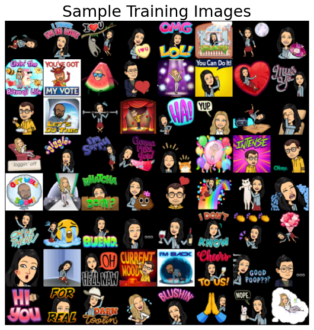

Appendix D: Creating a CNN to Predict Bitmojis#
import numpy as np
import torch
from PIL import Image
from torch import nn, optim
from torchvision import datasets, transforms, utils
from torchsummary import summary
import matplotlib.pyplot as plt
plt.style.use('ggplot')
plt.rcParams.update({'font.size': 16, 'axes.labelweight': 'bold', 'axes.grid': False})
from utils.set_seed import *
set_seed(1)
1. Introduction#
This code-based appendix contains the code needed to develop and save the Bitmoji CNN’s used in Lecture 7.
2. CNN from Scratch#
TRAIN_DIR = "data/eva_bitmoji_rgb/train/"
VALID_DIR = "data/eva_bitmoji_rgb/valid/"
IMAGE_SIZE = 64
BATCH_SIZE = 64
# Transforms
data_transforms = transforms.Compose([transforms.Resize(IMAGE_SIZE), transforms.ToTensor()])
# Load data and create dataloaders
train_dataset = datasets.ImageFolder(root=TRAIN_DIR, transform=data_transforms)
trainloader = torch.utils.data.DataLoader(train_dataset, batch_size=BATCH_SIZE, shuffle=True)
valid_dataset = datasets.ImageFolder(root=VALID_DIR, transform=data_transforms)
validloader = torch.utils.data.DataLoader(valid_dataset, batch_size=BATCH_SIZE, shuffle=True)
# Plot samples
sample_batch = next(iter(trainloader))
plt.figure(figsize=(10, 8)); plt.axis("off"); plt.title("Sample Training Images")
plt.imshow(np.transpose(utils.make_grid(sample_batch[0], padding=1, normalize=True),(1,2,0)));

device = torch.device('mps' if torch.backends.mps.is_available() else 'cpu') # SOLUTION
# BEGIN SOLUTION
class bitmoji_CNN(nn.Module):
def __init__(self):
super().__init__()
self.main = nn.Sequential(
nn.Conv2d(3, 8, (5, 5)),
nn.ReLU(),
nn.MaxPool2d((2, 2)),
nn.Conv2d(8, 4, (3, 3)),
nn.ReLU(),
nn.MaxPool2d((3, 3)),
nn.Dropout(0.2),
nn.Flatten(),
nn.Linear(324, 128),
nn.ReLU(),
nn.Linear(128, 1)
)
def forward(self, x):
out = self.main(x)
return out
def trainer(model, criterion, optimizer, trainloader, validloader, epochs=5, verbose=True):
"""Simple training wrapper for PyTorch network."""
train_loss, valid_loss, valid_accuracy = [], [], []
for epoch in range(epochs): # for each epoch
train_batch_loss = 0
valid_batch_loss = 0
valid_batch_acc = 0
# Training
for X, y in trainloader:
X, y = X.to(device), y.to(device)
optimizer.zero_grad()
y_hat = model(X).flatten()
loss = criterion(y_hat, y.type(torch.float32))
loss.backward()
optimizer.step()
train_batch_loss += loss.item()
train_loss.append(train_batch_loss / len(trainloader))
# Validation
model.eval()
with torch.no_grad(): # this stops pytorch doing computational graph stuff under-the-hood
for X, y in validloader:
X, y = X.to(device), y.to(device)
y_hat = model(X).flatten()
y_hat_labels = torch.sigmoid(y_hat) > 0.5
loss = criterion(y_hat, y.type(torch.float32))
valid_batch_loss += loss.item()
valid_batch_acc += (y_hat_labels == y).type(torch.float32).mean().item()
valid_loss.append(valid_batch_loss / len(validloader))
valid_accuracy.append(valid_batch_acc / len(validloader)) # accuracy
model.train()
# Print progress
if verbose:
print(f"Epoch {epoch + 1}:",
f"Train Loss: {train_loss[-1]:.3f}.",
f"Valid Loss: {valid_loss[-1]:.3f}.",
f"Valid Accuracy: {valid_accuracy[-1]:.2f}.")
results = {"train_loss": train_loss,
"valid_loss": valid_loss,
"valid_accuracy": valid_accuracy}
return results
model = bitmoji_CNN().to(device)
criterion = nn.BCEWithLogitsLoss()
optimizer = optim.Adam(model.parameters(), lr=2e-3)
results = trainer(model, criterion, optimizer, trainloader, validloader, epochs=30)
# END SOLUTION
Epoch 1: Train Loss: 0.661. Valid Loss: 0.608. Valid Accuracy: 0.67.
Epoch 2: Train Loss: 0.612. Valid Loss: 0.578. Valid Accuracy: 0.68.
Epoch 3: Train Loss: 0.588. Valid Loss: 0.577. Valid Accuracy: 0.68.
Epoch 4: Train Loss: 0.571. Valid Loss: 0.574. Valid Accuracy: 0.70.
Epoch 5: Train Loss: 0.556. Valid Loss: 0.565. Valid Accuracy: 0.69.
Epoch 6: Train Loss: 0.560. Valid Loss: 0.559. Valid Accuracy: 0.70.
Epoch 7: Train Loss: 0.541. Valid Loss: 0.561. Valid Accuracy: 0.70.
Epoch 8: Train Loss: 0.509. Valid Loss: 0.547. Valid Accuracy: 0.69.
Epoch 9: Train Loss: 0.490. Valid Loss: 0.528. Valid Accuracy: 0.71.
Epoch 10: Train Loss: 0.475. Valid Loss: 0.511. Valid Accuracy: 0.71.
Epoch 11: Train Loss: 0.453. Valid Loss: 0.497. Valid Accuracy: 0.74.
Epoch 12: Train Loss: 0.444. Valid Loss: 0.501. Valid Accuracy: 0.74.
Epoch 13: Train Loss: 0.409. Valid Loss: 0.487. Valid Accuracy: 0.73.
Epoch 14: Train Loss: 0.386. Valid Loss: 0.493. Valid Accuracy: 0.75.
Epoch 15: Train Loss: 0.385. Valid Loss: 0.476. Valid Accuracy: 0.75.
Epoch 16: Train Loss: 0.358. Valid Loss: 0.490. Valid Accuracy: 0.77.
Epoch 17: Train Loss: 0.335. Valid Loss: 0.502. Valid Accuracy: 0.76.
Epoch 18: Train Loss: 0.314. Valid Loss: 0.539. Valid Accuracy: 0.76.
Epoch 19: Train Loss: 0.307. Valid Loss: 0.534. Valid Accuracy: 0.76.
Epoch 20: Train Loss: 0.282. Valid Loss: 0.508. Valid Accuracy: 0.78.
Epoch 21: Train Loss: 0.277. Valid Loss: 0.507. Valid Accuracy: 0.79.
Epoch 22: Train Loss: 0.256. Valid Loss: 0.498. Valid Accuracy: 0.79.
Epoch 23: Train Loss: 0.238. Valid Loss: 0.547. Valid Accuracy: 0.79.
Epoch 24: Train Loss: 0.233. Valid Loss: 0.506. Valid Accuracy: 0.79.
Epoch 25: Train Loss: 0.217. Valid Loss: 0.588. Valid Accuracy: 0.77.
Epoch 26: Train Loss: 0.224. Valid Loss: 0.515. Valid Accuracy: 0.82.
Epoch 27: Train Loss: 0.178. Valid Loss: 0.527. Valid Accuracy: 0.82.
Epoch 28: Train Loss: 0.165. Valid Loss: 0.550. Valid Accuracy: 0.82.
Epoch 29: Train Loss: 0.183. Valid Loss: 0.521. Valid Accuracy: 0.82.
Epoch 30: Train Loss: 0.177. Valid Loss: 0.529. Valid Accuracy: 0.83.
# Save model
PATH = "models/eva_cnn.pt"
torch.save(model.state_dict(), PATH)
2. CNN from Scratch with Data Augmentation#
Is this eva or not eva?
image = Image.open('img/test-examples/eva-picnic.png')
image
Let’s check whether our CNN is able to figure it out.
image_tensor = transforms.functional.to_tensor(image.resize((IMAGE_SIZE, IMAGE_SIZE))).unsqueeze(0)
prediction = int(torch.sigmoid(model(image_tensor.to(device))) > 0.5)
print(f"Prediction: {train_dataset.classes[prediction]}")
Prediction: eva
Great! But what happens if I flip my image like this:
image_rotated = image.rotate(180)
image_rotated
You can still tell that it’s eva, but can our CNN?
image_tensor_flipped = transforms.functional.to_tensor(image_rotated.resize((IMAGE_SIZE, IMAGE_SIZE))).unsqueeze(0)
prediction = int(torch.sigmoid(model(image_tensor_flipped.to(device))) > 0.5)
print(f"Prediction: {train_dataset.classes[prediction]}")
Prediction: not_eva
Looks like our CNN is not very robust to rotational changes in our input image. We could try and fix that using some data augmentation, let’s do that now:
# Transforms
data_transforms = transforms.Compose([transforms.Resize(IMAGE_SIZE),
transforms.RandomVerticalFlip(p=0.5),
transforms.RandomHorizontalFlip(p=0.5),
transforms.ToTensor()])
# Load data and re-create training loader
train_dataset = datasets.ImageFolder(root=TRAIN_DIR, transform=data_transforms)
trainloader = torch.utils.data.DataLoader(train_dataset, batch_size=BATCH_SIZE, shuffle=True)
# Plot samples
sample_batch = next(iter(trainloader))
plt.figure(figsize=(10, 8)); plt.axis("off"); plt.title("Sample Training Images")
plt.imshow(np.transpose(utils.make_grid(sample_batch[0], padding=1, normalize=True),(1,2,0)));
Okay, let’s train again with our new augmented dataset:
# Define and train model
model_aug = bitmoji_CNN()
criterion = nn.BCEWithLogitsLoss()
optimizer = optim.Adam(model_aug.parameters())
results = trainer(model_aug.to(device), criterion, optimizer, trainloader, validloader, epochs=40)
Epoch 1: Train Loss: 0.680. Valid Loss: 0.642. Valid Accuracy: 0.60.
Epoch 2: Train Loss: 0.645. Valid Loss: 0.618. Valid Accuracy: 0.64.
Epoch 3: Train Loss: 0.630. Valid Loss: 0.597. Valid Accuracy: 0.67.
Epoch 4: Train Loss: 0.616. Valid Loss: 0.582. Valid Accuracy: 0.71.
Epoch 5: Train Loss: 0.610. Valid Loss: 0.578. Valid Accuracy: 0.70.
Epoch 6: Train Loss: 0.606. Valid Loss: 0.574. Valid Accuracy: 0.70.
Epoch 7: Train Loss: 0.586. Valid Loss: 0.568. Valid Accuracy: 0.70.
Epoch 8: Train Loss: 0.597. Valid Loss: 0.591. Valid Accuracy: 0.66.
Epoch 9: Train Loss: 0.597. Valid Loss: 0.558. Valid Accuracy: 0.72.
Epoch 10: Train Loss: 0.587. Valid Loss: 0.560. Valid Accuracy: 0.71.
Epoch 11: Train Loss: 0.576. Valid Loss: 0.579. Valid Accuracy: 0.69.
Epoch 12: Train Loss: 0.580. Valid Loss: 0.561. Valid Accuracy: 0.69.
Epoch 13: Train Loss: 0.576. Valid Loss: 0.559. Valid Accuracy: 0.70.
Epoch 14: Train Loss: 0.569. Valid Loss: 0.534. Valid Accuracy: 0.73.
Epoch 15: Train Loss: 0.545. Valid Loss: 0.523. Valid Accuracy: 0.75.
Epoch 16: Train Loss: 0.532. Valid Loss: 0.490. Valid Accuracy: 0.77.
Epoch 17: Train Loss: 0.506. Valid Loss: 0.468. Valid Accuracy: 0.79.
Epoch 18: Train Loss: 0.473. Valid Loss: 0.443. Valid Accuracy: 0.80.
Epoch 19: Train Loss: 0.469. Valid Loss: 0.469. Valid Accuracy: 0.78.
Epoch 20: Train Loss: 0.443. Valid Loss: 0.417. Valid Accuracy: 0.82.
Epoch 21: Train Loss: 0.408. Valid Loss: 0.397. Valid Accuracy: 0.82.
Epoch 22: Train Loss: 0.395. Valid Loss: 0.381. Valid Accuracy: 0.84.
Epoch 23: Train Loss: 0.380. Valid Loss: 0.385. Valid Accuracy: 0.84.
Epoch 24: Train Loss: 0.363. Valid Loss: 0.380. Valid Accuracy: 0.85.
Epoch 25: Train Loss: 0.361. Valid Loss: 0.360. Valid Accuracy: 0.86.
Epoch 26: Train Loss: 0.357. Valid Loss: 0.355. Valid Accuracy: 0.85.
Epoch 27: Train Loss: 0.342. Valid Loss: 0.354. Valid Accuracy: 0.85.
Epoch 28: Train Loss: 0.323. Valid Loss: 0.354. Valid Accuracy: 0.86.
Epoch 29: Train Loss: 0.316. Valid Loss: 0.346. Valid Accuracy: 0.86.
Epoch 30: Train Loss: 0.318. Valid Loss: 0.363. Valid Accuracy: 0.85.
Epoch 31: Train Loss: 0.320. Valid Loss: 0.349. Valid Accuracy: 0.86.
Epoch 32: Train Loss: 0.303. Valid Loss: 0.326. Valid Accuracy: 0.87.
Epoch 33: Train Loss: 0.300. Valid Loss: 0.331. Valid Accuracy: 0.87.
Epoch 34: Train Loss: 0.292. Valid Loss: 0.321. Valid Accuracy: 0.87.
Epoch 35: Train Loss: 0.295. Valid Loss: 0.343. Valid Accuracy: 0.87.
Epoch 36: Train Loss: 0.292. Valid Loss: 0.340. Valid Accuracy: 0.87.
Epoch 37: Train Loss: 0.291. Valid Loss: 0.352. Valid Accuracy: 0.86.
Epoch 38: Train Loss: 0.292. Valid Loss: 0.316. Valid Accuracy: 0.87.
Epoch 39: Train Loss: 0.273. Valid Loss: 0.302. Valid Accuracy: 0.88.
Epoch 40: Train Loss: 0.272. Valid Loss: 0.291. Valid Accuracy: 0.88.
# Save model
PATH = "models/eva_cnn_augmented.pt"
torch.save(model_aug.state_dict(), PATH)
Let’s try predict this one again:
image_rotated
image_tensor_flipped = transforms.functional.to_tensor(image_rotated.resize((IMAGE_SIZE, IMAGE_SIZE))).unsqueeze(0)
prediction = int(torch.sigmoid(model_aug(image_tensor_flipped.to(device))) > 0.5)
print(f"Prediction: {train_dataset.classes[prediction]}")
Prediction: eva
Got it now!